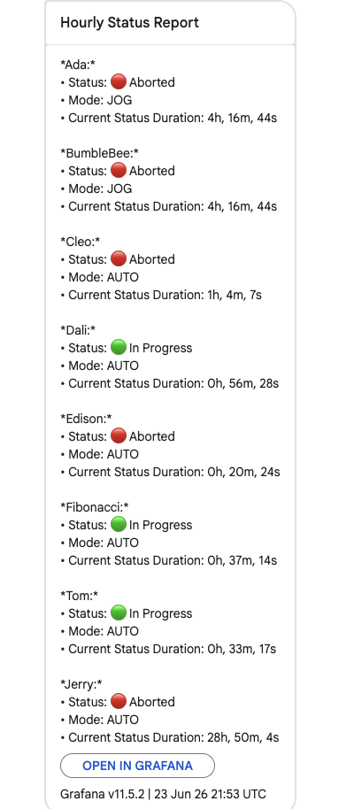
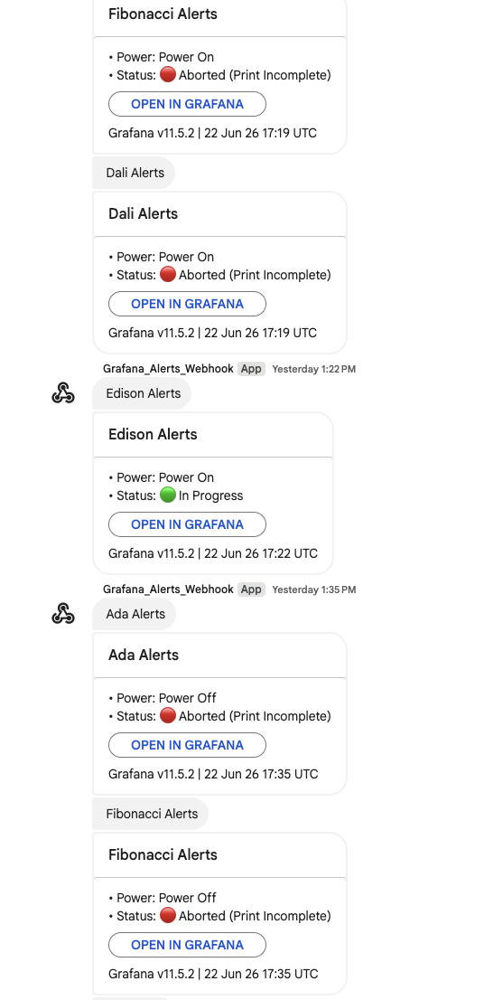

Dylan Didier
Computer Science Student at Auburn University pursuing an Artificial Intelligence Certification.
I focus on solving practical engineering problems using modern backend environments, data visualization pipelines, robust hardware-software integrations, and automated systems.
Technical Stack
Languages
Python, Java, C++, SQL, JavaScript (Node.js), HTML/CSS, Bash/Shell, R, Ruby
Tools, Frameworks & Databases
Git/GitHub, Docker, ClickHouse, Grafana, REST APIs (Axios), Pandas, NumPy, GitBook, Rhino, Grasshopper
Hardware & IoT
Raspberry Pi, I2C/GPIO Protocols, CAD / 3D Modeling, Edge Computing
Core Interests
Artificial Intelligence, Industrial Automation, Machine Telemetry, Additive Manufacturing
Featured Projects
Haddy
Software Engineering Intern • Large-Format Additive Manufacturing
Haddy Handheld Defect Logger
Overview
Quality control on the manufacturing floor previously required operators to manage a camera, clipboard, and measuring tools simultaneously. To solve this, I engineered a custom 3D-printed smart data logger that consolidates this workflow. By pointing a targeting laser and pulling a trigger, operators can capture an image that automatically calculates defect dimensions and syncs directly to the cloud.
My Contributions
- Hardware Integration: Interfaced a high-resolution camera, Time-of-Flight (ToF) distance sensor, targeting laser, and touchscreen with a Raspberry Pi 4 using I2C and GPIO protocols.
- Mechanical Design: Designed a custom, durable enclosure using CAD software and manufactured it with high-strength ABS filament to withstand the physical demands of an industrial shop floor.
- User Interface: Developed a touchscreen GUI in Python (CustomTkinter) to allow operators to easily input material types and categorize defects on the fly.
- Image Processing & Telemetry: Wrote Python logic that utilizes ToF sensor data to calculate the exact physical dimensions of the defect. Automated a pipeline to embed a metadata footer—containing measurements, material data, and timestamps—directly onto the saved JPEG file.
- Power System & Timing: Integrated a step-down converter to power the system using hot-swappable DeWalt power tool batteries. Solved image glare by programming micro-delays to disable the targeting laser a fraction of a second before the camera shutter releases.
- Sheets Integration: Uses a background webhook to instantly send data to a Google Sheet, automatically converting image filenames into direct, clickable Smart Chips linked to the Drive photo.
Results
- Streamlined a multi-step quality assurance process into a single, user-friendly point-and-shoot tool, significantly reducing logging time.
- Eliminated human error in defect measurement by automating the area calculation using real-time distance sensor data.
- Configured automated, headless cloud syncing (via Rclone) to Google Drive, giving the engineering team instant visibility into shop-floor defects.


Industrial Grafana Alerting Pipeline
Overview
Engineered a production-grade infrastructure monitoring system for industrial 3D printers. The pipeline tracks real-time machine states and connectivity, intelligently filtering out routine maintenance and delivering clean, formatted alerts directly to factory floor operators.
My Contributions & Impact
- Complex Alert Logic: Wrote ClickHouse SQL queries and advanced Grafana math expressions to catch both active machine faults and "silent disconnects" (network or power loss), completely eliminating monitoring blind spots on the floor.
- Smart Alert Suppression: Built logic to actively detect routine machine maintenance, like standard purge cycles, intelligently suppressing notifications to prevent operators from being spammed with false positives.
- Dynamic SQL Templating: Developed resilient SQL scripts for Grafana's Contact Points, transforming raw JSON data dumps into highly readable status messages that staff can read at a glance.
- Consolidated Communications: Replaced multiple cluttered alert rules with a single, unified data stream, drastically improving the operator experience and response times during actual machine failures.


Industrial Stack Light Edge Driver
Overview
Engineered a Node.js edge driver to control physical PATLITE signal towers mounted on large-format 3D printing robots, providing operators with real-time visual machine statuses. Following the hardware integration, I conducted a deep-dive analysis of 90 days of machine telemetry to design a high-accuracy, zero-noise alerting system for the factory floor.
My Contributions & Impact
- Hardware API Integration: Engineered a modular Node.js class to communicate with physical signal towers via REST endpoints, implementing robust async/await error handling and timeout catches for unreachable edge devices.
- Algorithm Optimization: Developed a pure function mapping dynamic machine states to hardware payload strings. Optimized array lookups using JavaScript `Set` objects to achieve O(1) constant-time channel validation, ensuring maximum execution performance.
- Two-Tiered Testing Suite: Built comprehensive testing protocols using the Node native test runner. Combined offline matrix verification with live network sweeps that successfully benchmarked hardware API latency at under 75ms.
- Data-Driven Architecture: Analyzed 90 days of raw CEAD machine telemetry (512 distinct alarm codes) to isolate the 27 critical codes that actually trigger a hard stop, while proving that the most frequent alarm (fired 32.7 million times) was merely a harmless parking state.
- Eliminating Alarm Fatigue: Used the telemetry findings to filter out millions of false positives, preventing the factory light towers from showing "false reds." This laid the technical foundation to replace a noisy legacy alerting system with a highly accurate, zero-noise fault notification pipeline.
Haddy Central Knowledge Hub
Overview
I built a centralized web platform using GitBook to organize the company's scattered documents, standard operating procedures, and troubleshooting guides into one place. It acts as a single, searchable source of truth that lets everyone—from factory technicians to sales reps—instantly find the exact information they need from any device.
My Contributions
- Department-Specific Navigation: Designed custom landing hubs for Sales, Engineering, and Factory Operations so each team gets a personalized dashboard rather than a confusing wall of text.
- Issue-Resolution Search Engine: Configured the search functionality so typing in a specific problem seamlessly routes users to the exact external hardware manual, training doc, or Jira escalation protocol they need.
- 6-Tier Factory Training Integration: Mapped the factory's entire 6-level Operator-to-Technician advancement system into the hub, linking out the specific study materials required to pass each stage gate.
- Version Control: Managed the site lifecycle using Git and GitHub, treating the internal wiki like a deployable codebase to safely track updates.
Results
- Gave the entire company a mobile-responsive website they can pull up anywhere—whether troubleshooting on the floor or jumping on a client call.
- Eliminated the need to dig through disconnected folders, making information access incredibly fast across all departments.
- Streamlined the onboarding process by giving new hires a clear, organized starting point for their training.
Rockwork Hybrid Printing Pipeline
Overview
Haddy 3D-prints large rock and boulder walls, but the overhang's can't be printed on the big machines without sagging. I built a Rhino/Grasshopper tool that takes a wall model and splits it into two parts: a base wall the large printers can handle, and small detailed inserts printed on the high-precision machines that snap into the base to fill in the parts it couldn't print.
My Contributions
- Overhang Analysis: Wrote Python that scores every face by angle and paints a heatmap showing exactly which surfaces won't print on a large-format machine.
- Geometry Repair: Automated a "melt and carve" step that smooths the shallow overhangs flat and cuts the stubborn ones into clean pockets for the inserts.
- Inserts: Generated thin shell inserts that keep the rock detail on the front but stay hollow behind it, so they use minimal material and drop right into their pockets.
- Verification: Built a checker that re-scans the finished wall for any overhangs it missed and gives a simple pass/fail with the location of anything still broken.
Results
- Lets Haddy print detailed rock walls that the large machines couldn't handle on their own.
- Replaces hours of manual mesh editing with a tool that does the analysis, repair, and checks automatically.
- Cuts material and print time by carving only where needed and keeping the inserts hollow.
Personal Projects
Independent Engineering & Software Development
Auburn–Regions Data Hackathon: Loan Default Prediction (3rd Place)
Overview
A three-person team project with Dane Miller and Vaughn Miller. Working from a dataset of 45,000 loan applications, along with each applicant's past accounts and prior loan requests, we estimated every applicant's chance of serious payment trouble and turned those estimates into a lending policy that approves, declines, or offers a smaller loan. Because lending decisions are regulated, the model also had to be fair and able to explain every decline. We placed 3rd.
My Contributions
- Gradient-Boosted Challenger: Trained a LightGBM model in Python on 30,000 training applications with 5-fold cross-validation and early stopping, using monotone constraints so each input can only push risk in the direction that makes business sense.
- SHAP Explanations: Used SHAP to break each applicant's risk score into how much every input pushed it up or down, turning the biggest upward pushes into the specific decline reasons fair-lending rules (Regulation B) require.
- Benchmarking: The LightGBM model edged out the team's 10-input logistic regression scorecard, with a cross-validated AUC of 0.745 vs. 0.742 (0.765 vs. 0.762 on the held-out validation set).
- Choosing Clarity Over Accuracy: We chose the scorecard as the final model, giving up 0.003 AUC for a simple points system that explains every decline. Its predicted default rates also held up at the decision cutoff (14.3% predicted vs. 14.1% actual).
- Profit-Based Lending Policy: Co-designed a policy that weighs each applicant's expected profit against expected loss, and offers a smaller loan to applicants who are too risky at the full amount.
Results
- Placed 3rd in the Auburn–Regions Data Hackathon.
- The final policy lends to 69% of applicants: 65% in full at a 6.2% default rate, down from 12.6% if everyone were approved, plus 4% at a reduced amount.
- Kept protected traits like age, marital status, and household size out of the model entirely, and checked outcomes across groups only after every decision was made.
- Shipped a fully reproducible pipeline: one command rebuilds the predictions in under a minute, backed by 322 automated checks covering data quality, leakage, calibration, and fairness.
Bitcoin Alpha Trust Network Analysis & Graph Modeling System
Overview
For my Social Network Analysis course, I built a network science pipeline to explore how trust and reputation actually form in a decentralized crypto marketplace. The project analyzes the Bitcoin Alpha trust network: 3,783 users and 24,186 rated transactions.
My Contributions
- Directed, Weighted Graph Model: Modeled the network as a directed, weighted graph, since trust isn't automatically mutual. Someone can rate you highly without you doing the same in return.
- Core & Community Structure: Used K-core decomposition to find a dense 34-layer "inner circle" of power users, then applied Louvain and Walktrap community detection to map out separate trading clusters within the network.
- Power-Law Testing: Tested whether the network follows a power-law (scale-free) structure using Maximum Likelihood Estimation, finding a heavy-tailed degree distribution (α = 2.7, xmin = 32) with a bootstrap goodness-of-fit p-value of 0.08.
- Null-Model Benchmarking: To confirm these patterns weren't random, benchmarked the real network against two generative baselines: a randomized null model (rewired edges, same degree sequence) and a Holme-Kim model, measuring how much more clustered and small-world the real data was.
- Inequality Analysis: Used Lorenz curves to measure how unevenly influence and connections are spread across users.
Results
- Found that a small number of users hold a disproportionate share of the network's connections.
- Uncovered a serious structural bottleneck: the maximum betweenness centrality was 246x the network average, meaning the platform's stability essentially rests on a small handful of gatekeepers.
- Identified a dual behavioral pattern among elite users: negative degree assortativity (−0.16) shows they actively vouch for and connect with newcomers, while positive trust-attribute assortativity (0.098) shows they keep their highest-value transactions within a tight, high-trust core.
Virtual Reality Flight Simulator Environment
Overview
Designed a web-based 3D testing environment to model immersive virtual reality mechanics inside a standard browser.
My Contributions
- Wrote clean HTML structures and vanilla CSS layouts to control exact 3D positioning.
- Experimented with depth fields, spatial perspective shifts, and custom user perspectives.
Results
- Gained key technical exposure to early graphics rendering workflows, UI design systems, and rapid code iteration.